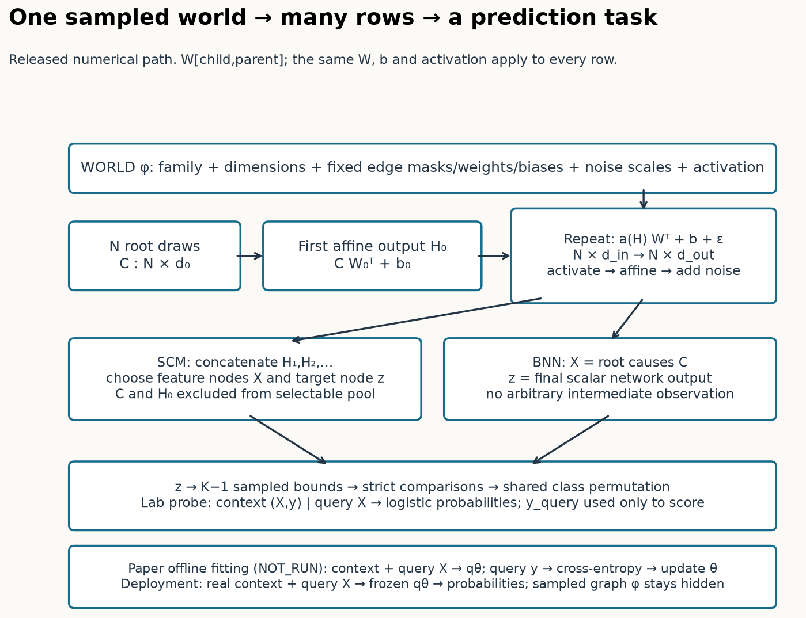
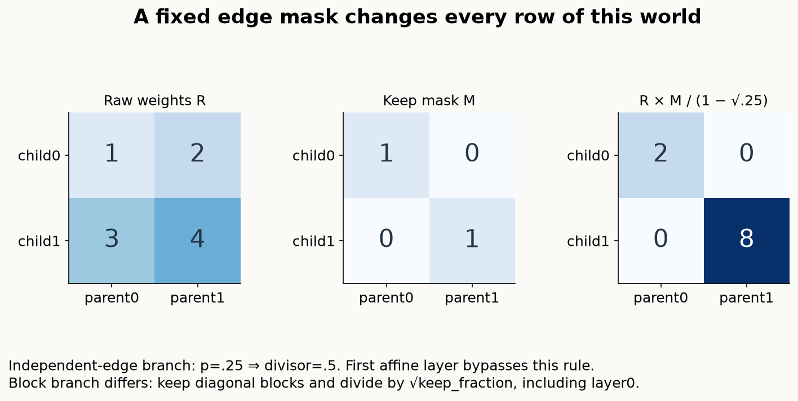
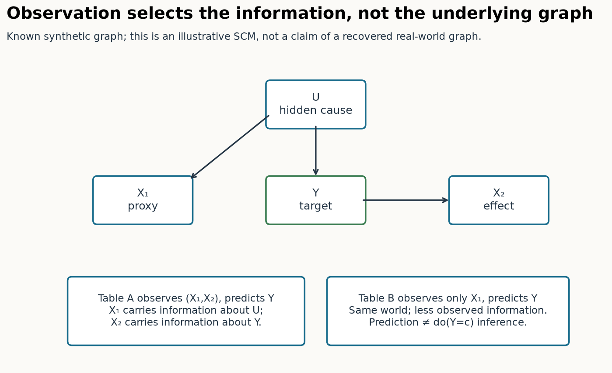
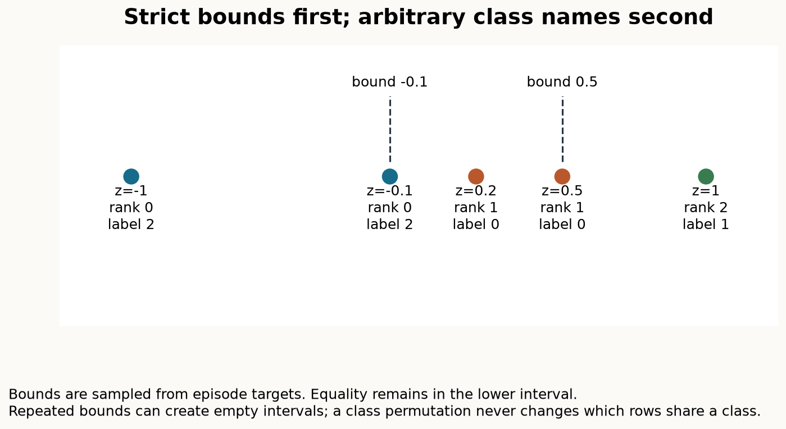
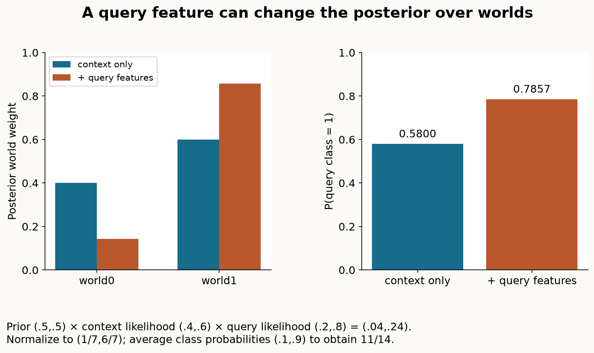
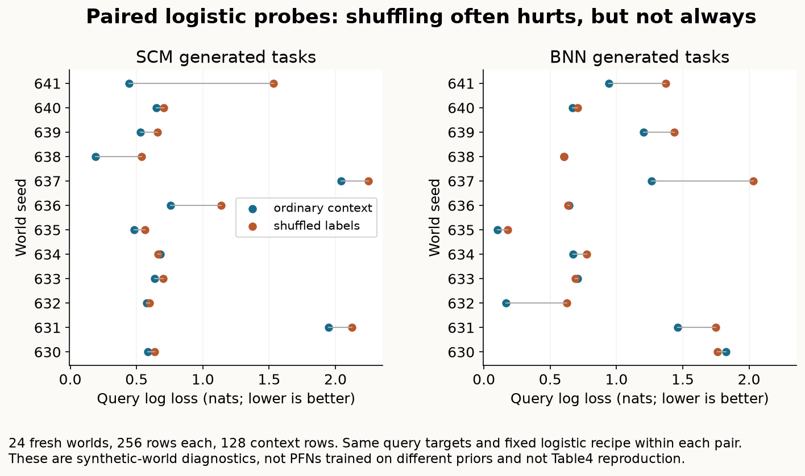

Year 2 · Quarter 3 · Lesson 063
Build the prior that teaches TabPFN what a table can be
Retrieve before reading
What does a pretrained predictor expect a table to look like?¶
A database table is not a bag of unrelated cells. A customer's age may affect income; income may affect a purchasing decision; a recorded account score may be an effect of several hidden causes. Two observed columns can correlate because one causes the other, because they share an unobserved cause, or because the process that selected the rows couples them. A useful supervised predictor can exploit those associations without identifying which causal story is true.
Lesson 061 trained a prior-data fitted network, or PFN, to predict from a context: labeled examples of a new task. Lesson 062 traced a released TabPFN v1 checkpoint through a real prediction. Here we open the other half of that system: the distribution of synthetic tasks used to teach such an inference algorithm. Your tangible outcome is a runnable prior card: sample one mechanism, generate a table through it, inspect what becomes visible, form classes, and diagnose which assumptions change a prediction.
The primary source is TabPFN v1, arXiv 2207.01848v6, especially §4, Appendix C, Appendix E.4/Table 5 and the prior ablation in Appendix B.4/Table 4. This lab implements the central numerical generator path from historical mlp.py, revision 44f60d8, not a newly invented TabPFN predictor. The generator has an architecture, but its weights are sampled to create data; they are not the trained Transformer weights used for deployment.
Retrieve before proceeding. What remains fixed across rows of a GP task in lesson 061? Which labels are hidden from a prediction query in lesson 062? What would fail if each labeled row belonged to a newly sampled, unrelated task? Write answers before looking at the trace below.
Two levels of randomness: a world and its observations¶
A structural causal model, abbreviated SCM, contains variables, directed edges and structural assignments. A directed edge from variable i to variable j permits i to enter j's equation. A directed acyclic graph, or DAG, has no directed cycle, so its variables can be evaluated in an order where every parent is available before its child. A variable's parents are its immediate inputs. An exogenous noise variable is a source of randomness outside those assignments; independence of these noises is an assumption we choose for the synthetic world.
In general, a structural assignment is Z_j = f_j(Z_parents(j), ε_j). The deterministic function f_j and the noise distribution are both part of the world. Noise values ε_j differ between rows. The function, its parameters and the noise distribution stay fixed. For example, if income = 2 × education + ε_income, every row uses coefficient 2; individuals receive different draws of ε_income. Sampling a fresh coefficient for every individual would describe a different learning problem.
Let φ denote all task-level choices: family, graph, weights, biases, activation, noise parameters, observed nodes and label rule. The sampling hierarchy is φ ~ p(φ), then many rows D ~ p(D | φ). The PFN training algorithm draws new worlds repeatedly. Within a task, context rows and query rows teach and test the same relationship. They differ in whether their labels are supplied to the predictor.
The distinction is easy to lose in code. A batch of 32 tasks needs 32 sampled worlds if the task contract specifies independent worlds. It does not mean 32 worlds per row. The released new_mlp_per_example flag chooses whether separate batch items share the sampled MLP; the historical checkpoint records True. Our operator samples one new world per dataset, then vectorizes its equations over all rows.

The released generator: follow the computation all the way through¶
Appendix C.1 constructs a tractable subfamily of DAGs by starting with a layered MLP and deleting edges. A multilayer perceptron, or MLP, is a sequence of affine maps and elementwise nonlinearities. Here each scalar neuron is a graph variable. Connections occur between consecutive layers, so acyclicity is built into the representation. This construction covers many DAGs but not every conceivable DAG with every possible function.
For a layer with d_in parents and d_out children, the released weight matrix W has shape d_out × d_in: child first, parent second. For N rows, the parent matrix has shape N × d_in. Multiplying by W.T gives one weighted sum for every row and child. A bias b, shape d_out, shifts that sum. Broadcasting adds the same bias to all rows; the noise matrix ε, shape N × d_out, supplies a distinct noise value per row and child.
The exact historical path is:
- Draw root causes C and compute
H0 = C @ W0.T + b0. This first affine layer has no explicit activation or added GaussianNoise module. - For later layers, compute
Hl = a(H(l−1)) @ Wl.T + bl + εl. Activation is applied to parent values before this affine map; structural noise is added after it. - In the SCM branch, concatenate
H1, H2, …into a pool of selectable variables. The raw root causes and first affine output H0 are excluded from this pool in the released code. - Select observed feature columns X and a scalar continuous target z. Convert z into class labels, then supply labeled context and unlabeled queries to the downstream learner.
Paper versus executable source. Appendix C.1 writes an abbreviated node equation with activation outside the weighted sum and noise. The historical generate_module instead builds Activation → Linear → GaussianNoise. These are not numerically interchangeable. This lesson's diagram, worked example, notebook and source checks follow the released order. The general SCM definition accommodates either order; a fidelity claim still has to choose one.
Trace a three-affine-layer identity example. Take C=(1,−2), W0=diag(2,1), b0=(0,1), giving H0=(2,−1). Next use W1=(1,−1), b1=.5, ε1=.1: H1=2−(−1)+.5+.1=3.6. Finally W2=(2), b2=−.2, ε2=.3 gives H2=2×3.6−.2+.3=7.3. Changing to tanh makes the second value tanh(2)−tanh(−1)+.6≈2.3256; it does not make it tanh(3.6).
The lab checks this recurrence against the actual historical MLP class, using its sampled weights and recorded causes/noises. Sixteen cases span SCM/BNN, independent/block sparsity and Identity/Tanh/LeakyReLU/ELU. The maximum absolute discrepancy is about 5.09×10⁻⁶ between the original float32 path and NumPy float64 evaluation. That checks conditional computation. It does not establish identical random streams, complete task distributions, or training trajectories.
Sparsity changes the world, not a training-time dropout mask¶
An edge has a coefficient. Setting that coefficient to zero removes its contribution from every row of the task. This is a task-level graph sample. It differs from ordinary neural-network dropout that redraws masks during training to regularize a fixed predictive model.
Independent sparsification samples a binary keep mask with probability 1−p per edge. The released checkpoint selects the square-root scaling flag, but its Bernoulli initializer uses the unusual divisor 1−√p, not √(1−p). For p=.25, raw weights (1,2) and mask (1,0) become (2,0). We preserve that expression because changing it would change the released operator. The first affine matrix skips independent dropout and this correction.
Blockwise sparsification uses a different rule. Divide a matrix into floor-sized diagonal blocks, keep those blocks, leave other entries and any leftover rows/columns zero, and divide kept raw weights by √keep_fraction. For a 4×4 matrix with two 2×2 blocks, half the entries remain and their scale factor is √2. This branch also acts on the first affine matrix. It can create strongly interacting groups with few paths between groups. Neither rule guarantees that each selected feature predicts the selected target.

Why prefer smaller/sparser worlds? The paper's simplicity prior favors mechanisms with fewer nodes and parameters, implementing one particular meaning of Occam's razor. This is an inductive assumption, not a proof that a smaller graph generated your database. A deep nonlinear graph can generate a simple observed problem; a small hidden-variable graph can generate a difficult one. Count parameters and inspect the observation rule before equating generator size with prediction difficulty.
Hyperparameters are themselves random variables¶
The paper mixes a BNN generator and an SCM generator with equal probability. Inside each family it varies graph depth, width, activation, sparsity, noise and observation choices. A hyperparameter here controls a distribution of tasks. It is not a setting fitted separately by cross-validation on the deployment table.
Table 5's shorthand TNLU samples positive values by drawing distribution parameters on a logarithmic scale, sampling a positive truncated normal value, optionally rounding, then adding a minimum. A logarithmic scale gives comparable probability to multiplicative ranges such as .01–.1 and .1–1. Truncation prevents negative scales or sizes. The historical implementation's meta_trunc_norm_log_scaled draws a mean μ and a coefficient of variation r, then sets standard deviation σ=μr. Its r range defaults to .01–1. Table 5 describes independently log-uniform μ and σ; those descriptions are not the same distribution.
| Quantity | Paper Table 5 / checkpoint range | Numerical lab choice |
|---|---|---|
| Layer count | Mean range 1–6; round; add 2 | Released relative-σ sampler; cap total affine hidden layers at 5 |
| Hidden width | Mean range 5–130; round; add 4 | Same sampler; cap at 32; SCM also requires at least 1+2F nodes |
| Root-cause count | Mean range 1–12; round; add 1 | Same sampler; cap at 16; BNN roots are its F input features |
| Weight standard deviation | Mean range .01–10 | Sampled, without an extra lab scale cap |
| Noise standard deviation | Mean range .0001–.3 | Sampled; optionally draw node-specific positive scales |
| Edge dropout | .9 × Beta(a,b), with a,b uniform .1–5 |
Same hierarchy; sampled once per world |
| Activation | Tanh, LeakyReLU, ELU, Identity | Uniform choice among these four named paper functions |
| Root sampling | Released checkpoint selects mixed distributions | Conditional Gaussian root branch only |
These architecture caps change the distribution; they do not merely make an identical experiment faster. The manifest records raw and capped sizes. Gaussian root means/scales can be shared across rows, but we do not execute the released mixed Gaussian/categorical/Zipf root branch. We also omit input-feature scaling, categorical conversion, missingness corruption, full FlexibleCategorical preprocessing and its class-compatibility rejection. The pinned repository's default model_configs.py has further differences from the actual checkpoint, so it is source context, not a certificate of the final training recipe. The source inventory separates its identity from selected checkpoint metadata.
Observed features can be causes, effects, or proxies¶
In a BNN task, sampled roots are inputs X and the last network output is the target. This favors an input-to-output perspective. In an SCM task, feature and target nodes can be selected from intermediate layers. A feature might be an ancestor of y, a descendant, or a variable connected through an unobserved common cause. The unselected nodes remain latent: present in the generator, absent from the table.
Consider U → X1, U → Y, and Y → X2. U is a hidden common cause; X1 is a proxy for it. X2 is an effect of Y. Observing (X1,X2) can make Y predictable without observing U. Replacing X2 with an unrelated variable removes information without changing the latent graph. A predictor that exploits X2 has learned an association. It has not learned what would happen if an intervention set Y to a new value in a real system.

Released node selection has details worth tracing. In the non-block selection branch, randperm(pool_size−1) excludes the last coordinate. When y_is_effect=True, the final coordinate is selected separately as the target. Blockwise feature sampling chooses a contiguous window, then shuffles its indices; optional sorting restores feature order. With the last-node target option, that block can include the target among features. Our lab rejects and redraws such overlapping selections, records the rejection count, and checks that features are distinct. This is an intentional departure from a possible historical label leak, not source parity for that corner case.
For the relational mission, these are still single-row variable graphs. A customer entity connected to many transactions is not represented merely by drawing a larger MLP. A relational prior would have to specify entities, relation structure, aggregation and event/label clocks. A realistic-looking covariance matrix in a flattened table does not demonstrate that those mechanisms are modeled.
How a continuous mechanism becomes an imbalanced multiclass task¶
The generator first supplies a real-valued target z. Section 4.5 samples K−1 target values as class bounds and counts how many bounds each target strictly exceeds: r_i = Σ_j 1[z_i > B_j]. It may then permute class identities. Integer labels are names; a class labeled 2 need not be semantically between classes 1 and 3.
For targets (-1,−.1,.2,.5,1), choose bounds (-.1,.5). The ranks are (0,0,1,1,2): equality belongs to the lower interval because comparison is strict. Relabel ranks through permutation (2,0,1) and the observed labels become (2,2,0,0,1). A mean or median threshold cannot reproduce this multiclass rule. Sampling bounds with replacement can repeat a value, making an interval empty. Repeated targets can also create ties. Do not force every class to appear merely because K was sampled.

The source class-count sampler chooses binary half the time; otherwise it rounds a uniform draw from 2 to the maximum class count. Thus the remainder is not exactly uniform over integers: endpoint bins are narrower. The lab retains that rule with maximum 10, samples bounds from the whole synthetic episode and applies one class permutation to every row. It does not force balanced classes. The full historical wrapper additionally tries to repair context/query class support, remaps valid class IDs contiguously and applies a random label shift. The lab reproduces the inner rank operator and shared relabeling, not those later wrapper steps.
Using full-episode targets for bound construction is a declared joint task generator, as in the paper; it is not a recipe for choosing real test-label thresholds. Likewise, fitting preprocessing on synthetic episode rows in the original wrapper must not be copied uncritically into real deployment evaluation. Here the diagnostic probe fits its scaler and coefficients only on context rows. The fixed synthetic label rule is defined before the learner receives context/query roles.
The query's features can also update beliefs about the world¶
A posterior predictive distribution, or PPD, averages predictions over worlds weighted by how plausible those worlds remain after observing data. Let D be labeled context, x* a query feature vector and y* its unknown label. In a joint generative SCM:
p(y* | x*, D) = ∫ p(y* | x*, φ) p(φ | x*, D) dφ.
Bayes' rule gives p(φ | x*, D) ∝ p(φ) p(D | φ) p(x* | φ) when rows are conditionally independent given φ. The last term matters: a query's features can favor one world over another even before its label is known. The familiar simplification using only p(φ | D) is justified when the feature distribution contributes the same factor across hypotheses, or when the prior is explicitly conditional on fixed inputs. A general SCM models X as well as Y, so that simplification is not automatic. Joint synthetic label construction can require an even more explicit episode-level likelihood; the independent-row factorization below belongs to the stated finite oracle.
Work through two candidate worlds. Prior weights are (.5,.5), context likelihoods (.4,.6), and query-feature likelihoods (.2,.8). Their unnormalized posterior masses are (.04,.24). Divide by total .28 to obtain (1/7,6/7). If the class-1 probabilities in those worlds are (.1,.9), the PPD is 11/14≈.7857. Ignoring query-feature evidence gives context-only weights (.4,.6) and prediction .58. The difference is inference about a distribution of worlds, not selecting a single causal graph.

The notebook implements this finite sum in log space. Add log prior, log context likelihood and log query-feature likelihood; subtract logsumexp before exponentiating. This prevents underflow when many small probabilities are multiplied. If all worlds assign zero probability to an observation, the posterior is undefined: raising an error is more informative than quietly emitting NaNs.
An exact finite-mixture oracle is affordable because it enumerates two worlds. The full TabPFN prior integrates over architectures, weights, noise and observation rules, making that enumeration intractable. A PFN learns to approximate the conditional prediction by minimizing held-out synthetic cross-entropy. At the population optimum, expected cross-entropy is the entropy of the true conditional distribution plus a nonnegative KL divergence from it to the model prediction. This explains the target of prior fitting; finite training, model capacity, optimization and prior mismatch still create approximation error.
Controlled measurements: what was actually learned or verified?¶
Predict first. If a context helps because its features and labels reveal a shared world, what should happen when we permute only its labels? Must every finite task's score get worse? Separately, if two worlds predict different feature distributions, should discarding x* improve the exact oracle's expected log loss?
The fresh author panel contains 12 SCM worlds and 12 BNN worlds. Each has 256 rows, the first 128 as context, and three observed features. A fixed logistic classifier with C=1 and context-fitted standard scaling predicts the other 128 rows. Its shuffled arm changes only the association between context features and labels; it preserves class counts, features, split, fitted-model recipe and query targets. Missing context classes receive clipped probability 10⁻¹² and probabilities are renormalized; single-class contexts use a constant predictor. We retain those difficult cases instead of silently filtering them away.
The metric is negative log likelihood, equivalently multiclass log loss, measured in nats: smaller is better. A confident wrong prediction incurs a large penalty. Each plotted gap is shuffled loss minus ordinary loss on the same task. The unit of variation is a newly sampled synthetic world. The same integer seed across SCM and BNN is not a matched latent world: their random draws and observation pathways differ. These two family means must not be read as a causal comparison of prior quality.

| Family | Ordinary NLL | Shuffled NLL | Gap mean ± SD | Positive gaps |
|---|---|---|---|---|
| SCM | 0.7934 | 1.0083 | 0.2150 ± 0.3013 | 11/12 |
| BNN | 0.8551 | 1.0468 | 0.1917 ± 0.2518 | 8/12 |
Sample SD across generated worlds; no real-dataset or training-seed confidence claim.
On this panel, SCM mean loss is .7934 versus 1.0083 after shuffling; the paired gap is .2150 with sample standard deviation .3013 across worlds. Eleven of twelve gaps are positive. BNN mean loss is .8551 versus 1.0468; gap .1917 with standard deviation .2518, positive on eight of twelve worlds. The exceptions matter: permutation can accidentally improve a weak finite-data logistic fit. These probes show learnable feature-label information in many generated tasks. They do not train or evaluate a PFN, and do not rank SCM-trained versus BNN-trained TabPFNs.
A separate exact oracle experiment samples 500 tasks from a fully specified two-world distribution: equal world probabilities; X | φ ~ Normal(2φ−1,1); Y | φ ~ Bernoulli(.1+.8φ); X and Y independent conditional on φ. Each task has two labeled context observations and one query. Correct joint prediction gives mean loss .3449; dropping query-feature likelihood gives .3656. The difference is measured on a finite sample; the general expected-loss justification comes from proper probabilistic prediction, not from this one observed sign. The saved artifact includes every context, query, hidden world and posterior weight, so you can reconstruct the calculation independently.
Intervene on a known generator, then state the limit¶
For each sampled world we also set its largest-magnitude final-layer coefficient to zero while holding root draws, every structural-noise draw, biases and other coefficients fixed. Every earlier layer remains exactly unchanged. If the selected coefficient was already zero, the record explicitly calls this a no-op control. The affected continuous child's change has an exact oracle: ΔH_child = −a(H_parent) × removed_weight, because no later operation follows that final affine/noise update.
This is an edge-mechanism intervention in a known synthetic world. It is different from a node intervention do(Z_j=c), which replaces the entire assignment of Z_j. It is also different from conditioning on observed Z_j=c. Our final-layer child need not be the selected target; the record names the changed latent node and does not claim every intervention changes observed labels.
Structural noise enters an assignment and can propagate to later variables. Measurement noise added to an observed feature after generating the world changes the recorded feature without retroactively changing the latent target. The lab separately removes structural noise while retaining the same causes and weights; that is a diagnostic counterfactual, not an observational estimate of irreducible error. Removing noise can affect both features and target when both are graph nodes, so one cannot infer a change in prediction accuracy from its magnitude alone.
What the paper ablation establishes—and what remains to reproduce¶
Appendix B.4/Table 4 compares PFNs trained under different priors, using less compute than the final released model. Reported mean cross-entropies are .811 for BNN, .771 for SCM and .776 for the mixture; mean ROC AUCs are .865, .881 and .883. The main contrast supports the benefit of the SCM prior over the BNN prior in that experiment. The mixture does not clearly improve on SCM alone across those two metrics. Do not attach the paper's uncertainty notation to our synthetic-world variation or interpret the two metrics as a universal ranking.
Our result is INCOMPARABLE to that table: different learner, tasks, observation distribution, budgets and metrics aggregation. The original final training used 18,000 updates × 512 datasets = 9,216,000 synthetic datasets, each of size 1,024, and the paper reports 20 hours on eight RTX 2080 Ti GPUs. Full prior fitting, matched PFN prior ablation and the original real-data benchmark are NOT_RUN here. The lab/closer presets are executable generator audits, not paper reproduction presets.
The reproduction contract supplies a larger 64-world-per-family local audit and a concrete route to the historical PriorFittingCustomPrior.ipynb and train.py. A credible Table 4 reproduction must hold predictor architecture, optimizer, task count, evaluation datasets and selection fixed while varying only prior family, then repeat independent training seeds. Original data splits, preprocessing, meta-validation choices and comparison uncertainty must also be reconciled. Raising the number of synthetic logistic probes is useful evidence about this generator, but it cannot substitute for that experiment.
Exit: defend a runnable prior card¶
Submit the five live CHECKs, source-parity result, a freshly measured probe panel, the two-world posterior calculation, one intervention trace, and student-l063-exit.json. Your written card must name what is sampled once per world versus once per row, the exact affine/activation/noise order, observed and hidden nodes, class bounds and class renaming, two intentional distribution deviations, and one deployment mismatch that a controlled test could falsify.
Explain why the learned predictor does not return a causal graph or an intervention effect. Compare the three generators you now know: the lesson 061 GP couples function values through a covariance kernel; the BNN samples a feed-forward input-to-target function; the SCM samples a joint variable graph and then decides which variables are visible. The row-token Transformer is the inference network trained on such tasks, not a fourth synonym for the prior.
For a falsifiable next step, propose a relational dependency absent from this row generator, specify how to add it, then freeze a real evaluation protocol before observing results. Bring the code trace and a failed case to the teacher. Tomorrow, reconstruct the (.04,.24) → (1/7,6/7) posterior and the strict-bound multiclass example from memory before reopening the reference.
Run the companion lab
Ask the teacher about any operation or failed case you cannot defend.